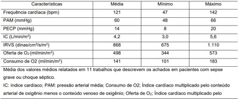
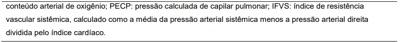

Questão 1 · Tratamento do choque hipovolêmico · 4000190729Paciente 70 anos, admitido em terapia intensiva após esofagectomia subtotal transhiatal convencional por carcinoma espinocelular de terço médio. Está sedado, em ventilação mecânica, com doses de analgésico otimizadas apresentando frequência cardíaca de 135 bpm, pressão arterial média de 55 mmHg, Sat O2 99% com FiO₂ a 40%. Pressão venosa central de 3 cmH₂0. Gasometria arterial: pH: 7,30; pO₂: 90; pCO₂: 35; HCO₃: 14; Sat 99%. A melhor conduta neste caso é:
A Expansão com albumina humana 10%.
B Prescrever noradrenalina (0,3 mcg/kg/min).
C Administrar bicarbonato de sódio 8,4%.
D Expansão volêmica com Ringer Lactato ou Cloreto de Sódio 0,9%.
Questão 2 · Classif icação do Choque · 4000190064Causado por uma diminuição crítica do volume intravascular. O retorno venoso (précarga) diminuído resulta em diminuição do preenchimento ventricular e redução do volume de ejeção. Se não for compensado por aumento da frequência cardíaca, o débito cardíaco diminui. São características de.
A Choque anafilático.
B Choque cardiogênico.
C Choque hipovolêmico.
D Choque distributivo.
Questão 3 · Choque · 4000184063Caso 1 Mulher, 65 anos, queixa-se de dor crônica em joelhos quando anda, com piora ao longo do dia. Nega febre ou perda de peso. Apresenta antecedente de diabetes, dislipidemia e hipertensão, em controle clínico regular. No exame clínico, encontra-se com índice de massa corpórea de 32 kg/m² e hipotrofia dos quadríceps bilateralmente. Há aumento de volume dos joelhos com crepitações na exão ativa e discreto varismo. No joelho direito, há leve aumento de temperatura e derrame discreto. Exames complementares mostraram hemograma sem alterações e proteína C-Reativa de 8 mg/L. Três meses após a consulta, a paciente foi atendida em pronto atendimento municipal e encaminhada ao pronto-socorro de hospital terciário por disúria, dor lombar e febre há 3 dias. Não tem antecedentes relevantes. O exame clínico inicial apresentou regular estado geral, PA 80x42 mmHg, FC 120 bpm, T axilar 38,4ºC. Encontrava-se confusa, com pontuação na escala de coma de Glasgow de 12 e má perfusão periférica. Semiologia pulmonar normal. Apresentava posição antálgica e dor à punho-percussão lombar. Posteriormente, a paciente foi transferida à Unidade de Terapia Intensiva. Durante as primeiras horas de evolução, foi sedada, entubada e foram locados cateter venoso central e monitorização invasiva da pressão arterial. Após uma hora da introdução de tratamento específico adequado e expansão volêmica, apresentou PA 84x50 mmHg e FC 108 bpm. Permanece com má perfusão periférica. Semiologia pulmonar normal. Teve débito urinário de 30 mL nas últimas duas horas. O eletrocardiograma e a monitorização estão apresentados. Considerando os dados de monitorização, qual é a conduta mais adequada?


A O volume corrente deve diminuir pelo risco de barotrauma.
B A expansão volêmica deve continuar para elevar o débito cardíaco.
C A punção para alívio do derrame pericárdico deve ser realizada.
D A droga vasoativa de escolha é a dopamina, pelo maior efeito miocárdico.
Questão 4 · Choque · 4000183317Analise as assertivas abaixo e assinale V, se verdadeiras, ou F, se falsas. ( ) A principal característica do choque é a hipoperfusão, e não um nível específico de pressão sanguínea arterial sistêmica. ( ) O vasopressor de escolha para início da ressuscitação é a epinefrina. ( ) A antibioticoterapia deve ser iniciada após estabilização do paciente. ( ) Para pacientes com nível sérico de lactato elevado, a terapêutica deve ser direcionada para redução desse marcador. A ordem correta de preenchimento dos parênteses, de cima para baixo, é:
A F – V – V – F.
B V – F – F – V.
C V – V – F – F.
D F – F – V – V.
Questão 5 · Avaliação inicial do paciente em choque · Parâmetros hemodinâmicos no choque · 4000191312Considera-se uidorresponsivo o paciente com uma variação acima de 13% por meio da mensuração da variação da pressão de pulso (VPP). Entretanto, existem inúmeras limitações para essa mensuração. Sendo correto que:
A Esse método só está validado em pacientes sem ritmo sinusal, nem sob ventilação mecânica, em modos não espontâneos, com volume corrente em 8 ml/Kg de peso predito pela altura.
B Esse método só está validado em pacientes em ritmo sinusal, sob ventilação mecânica, em modos espontâneos, com volume corrente em 8 ml/Kg de peso predito pela altura.
C Esse método só está validado em pacientes em ritmo sinusal, sob ventilação mecânica, em modos não espontâneos, com volume corrente em 8 ml/Kg de peso predito pela altura.
D Esse método só está validado em pacientes em ritmo sinusal, sob ventilação mecânica, em modos não espontâneos, com volume corrente em 20 ml/Kg de peso predito pela altura.
Questão 6 · Tratamento do choque séptico · Choque séptico · 4000167945A Tabela a seguir, demonstra as características hemodinâmicas dos pacientes em choque séptico. Baseado nisso, assinale V (verdadeiro) e F (falso) sobre o tratamento do choque séptico. [ ] Faça cultura dos líquidos corporais relevantes, incluindo o sangue [ ] Insira cateter venoso central ou de artéria pulmonar [ ] Infunda solução de eletrólitos balanceada de 500ml/15 minutos. [ ] Se após bolus de 500ml de solução salina, o paciente continuar hipotenso e PVC (pressão venosa central) >15 ou a PEAP (pressão encunhada de artéria pulmonar) <15-20 o paciente permaneça hipotenso (PAM <65 mmHg), deve-se iniciar a administração de substância inotrópica - dobutamina ou dopamina. O objetivo é obter pressão arterial >65 mmHg e Pulso > 120 bpm (batimentos por minuto) [ ] Se após a administração de volume e substância inotrópica, a RVS (resistência vascular sistêmica) for >600, deve-se administrar vasopressor – norepinefrina ou vasopressina – para diminuir a RVS


A V, V, V, V, F
B V, V, V, F, F
C V, F, V, F, V
D V, V, F, F, F
E V, V, V, F, V
Questão 7 · Choque · 4000167936O choque pode ser classificado de acordo com sua etiologia e o padrão hemodinâmico predominante, com estes critérios, relacione a coluna da direita com a da esquerda e procure nas alternativas a sequência correta. I. Hipovolêmico II. Obstrutivo III. Distributivo IV. Cardiogênico [ ] Miocardite [ ] Anafilaxia [ ] Coarctação aórtica [ ] Desidratação
A III, II, I, IV
B II, I, IV, III
C I, IV, III, II
D IV, III, II, I
E Nenhuma das alternativas acima está correta
Questão 8 · Tratamento do choque hipovolêmico · 4000167915Pacientes com diversos tipos de choque chegam rotineiramente nas emergências dos prontos atendimentos e o conhecimento das diferentes causas e suas consequências é fundamental para o tratamento adequado. Assinale a alternativa correta.
A O choque hipovolêmico pode ser causado por desidratação, perda sanguínea ou diarreia e cursa com diminuição do débito cardíaco e do índice cardíaco.
B O choque cardiogênico pode ser causado por insuficiência coronariana ou arritmias e tem como alterações principais a vasoplegia periférica e o aumento da pré-carga e do débito cardíaco.
C O choque neurogênico é mais frequentemente ocasionado por anestesia geral e cursa com aumento no tônus vasomotor periférico.
D Na fase tardia do choque séptico, os índices cardíacos são hiperdinâmicos e há adequada liberação de oxigênio para a periferia.
Questão 9 · Choque · 4000166227Mulher, 39 anos de idade, com insu ciência renal crônica dialítica, com fração de ejeção do ventrículo esquerdo de 55%, foi submetida à troca valvar mitral por endocardite bacteriana subaguda, sem intercorrências. No pós-operatório imediato, apresenta-se hipotensa e com baixo débito pelo dreno torácico, pressão venosa central e pressão capilar pulmonar normais, índice cardíaco aumentado. Qual é o diagnóstico mais provável e a conduta mais adequada?
A Tamponamento cardíaco; re-exploração cirúrgica.
B Hipovolemia pós-operatória; reposição volêmica.
C Disfunção ventricular; dobutamina.
D Vasoplegia pós-circulação extracorpórea; noradrenalina.
Questão 10 · Tratamento · 4000164838Sobre as drogas vasoativas, assinale a alternativa abaixo que contém uma droga sem efeitos Inotrópicos.
A Adrenalina
B Vasopressina
C Dobutamina
D Dopamina
Questão 11 · Choque hipovolêmico · Parâmetros hemodinâmicos no choque · 4000163243Paciente em pós-operatório imediato de esplenectomia, por trauma abdominal fechado, é admitido no CTI. Após 12 horas, evolui instável hemodinamicamente com pressão arterial de 80/60 mmHg e frequência cardíaca de 130 bpm. Apresenta nível de hemoglobina de 12,8 g/dL e não há sinais de sangramento no dreno abdominal. Acerca da ressuscitação hemodinâmica, assinale a alternativa correta.
A A estabilidade hemodinâmica deverá ser atingida através do uso de vasopressores, preferencialmente a noradrenalina.
B A ultrassonografia da veia cava pode auxiliar a reposição volêmica caso apresente colabamento acima de 50% durante a respiração.
C Deverá ser realizada expansão volêmica com base apenas na pressão venosa central.
D O paciente certamente apresenta coagulopatia secundária a sangramento, que deverá ser corrigida com transfusão na proporção de 1:1:1.
E Trata-se de sangramento oculto não diagnosticado, e a equipe cirúrgica deve ser imediatamente comunicada para reabordagem.
Questão 12 · Choque Distributivo · Etiologia do Choque · Tratamento do choque distributivo · 4000174331Uma paciente com história de alergia a camarão é submetida a uma tomogra a com contraste para investigação de uma massa anexial à esquerda. Logo no início do exame a paciente ca agitada e reclama de falta de ar. Ao exame físico a paciente apresentava intenso rash cutâneo, edema palpebral e labial, frequência cardíaca de 130 bpm e pressão arterial de 80 x 45 mmHg. À monitoração hemodinâmica, qual dos seguintes padrões você esperaria encontrar?
A Choque obstrutivo: débito cardíaco baixo e resistência vascular periférica alta.
B Choque cardiogênico: débito cardíaco baixo e resistência vascular periférica alta.
C Choque hipovolêmico: débito cardíaco baixo e resistência vascular periférica alta.
D Choque distributivo: débito cardíaco alto e resistência vascular periférica baixa.
Revisar: possível letra faltando em enunciado
Questão 13 · Vasopressores · Tratamento · 4000173902Em relação às drogas vasoativas, frequentemente utilizadas em terapia intensiva, podemos afirmar que:
A A dopamina, precursora natural da noradrenalina e da adrenalina na via de síntese das catecolaminas, tem efeito inotrópico negativo e cronotrópico e dromotrópico positivos.
B O efeito dopaminérgico da dopamina é indicado para a nefroproteção nos pacientes com lesão renal aguda, se utilizado nas doses baixas (1
C A adrenalina é um fármaco com afinidade para se ligar aos receptores
D A vasopressina, ao se ligar aos recetores V1, causa vasoconstrição pela contração do músculo liso vascular, e pela ligação aos recetores V2 promove a reabsorção de água ao nível do sistema excretor renal.
Questão 14 · Tratamento do choque distributivo · 4000171829Homem de 23 anos é levado ao Pronto-Socorro com a queixa de dispneia e chieira torácica iniciados subitamente 10 minutos antes, logo após tomar 1 comprimido de dipirona para dor de cabeça. Desconhece doenças prévias ou alergias medicamentosas. Ao exame físico, PA: 120x78mmHg, FC: 102bpm, FR: 26ipm, SpO2 93% (em ar ambiente). A pele apresenta placas eritematosas pruriginosas nos membros. Há edema na pálpebra superior esquerda. O exame respiratório revela taquipneia, uso de musculatura acessória da respiração e sibilos expiratórios difusamente. O restante do exame físico não apresenta anormalidades. Após receber 3 doses do tratamento inicial, houve melhora respiratória, entretanto, o paciente apresentou confusão mental. Os dados vitais eram: PA: 70x46mmHg, FC: 120bpm, FR: 21ipm, SpO₂ 97% (em ar ambiente). Assinale a alternativa que NÃO apresenta uma conduta terapêutica indicada nesse momento.
A Elevação dos membros inferiores.
B Epinefrina intravenosa em infusão contínua.
C Infusão de cristaloides pela via intravenosa.
D Vasopressina intravenosa em infusão contínua.
Questão 15 · Classif icação do Choque · Tratamento do choque distributivo · 4000145006Podemos definir como choque um estado de hipoperfusão tecidual. Dentre os parâmetros hemodinâmicos abaixo relacionados, qual das alternativas abaixo é CORRETA?
A Choque cardiogênico: resistência vascular sistêmica baixa e índice cardíaco baixo
B Choque hipovolêmico: pressão venosa central baixa, pressão de oclusão capilar alta
C Choque distributivo: pressões de enchimento dependem do ""status volêmico"" do paciente, resistência vascular sistêmica baixa
D Choque obstrutivo: Índice cardíaco normal e pressão de oclusão capilar baixa
E Nenhuma das alternativas anteriores.
Questão 16 · Choque · 4000144707Mulher, 68 anos de idade, foi admitida no PS com PA = 80/30 mmHg, FC = 120 bpm, FR = 30 ipm, SpO₂; = 88%, temperatura = 39º C e tempo de enchimento capilar (TEC) = 4 s. Qual das medidas abaixo é a mais adequada para reduzir a VO2 do paciente.
A Ringer lactato 30 ml/kg IV.
B Iniciar noradrenalina precoce.
C Dipirona 1g IV.
D Iniciar dobutamina.
Questão 17 · Fisiopatologia do Choque · Manif estações clínicas · 4000144517O sinal clínico mais precoce do choque hipovolêmico é:
A Rebaixamento do nível de consciência.
B Palidez cutâneo-mucosa.
C Falha do preenchimento capilar.
D Taquicardia.
Questão 18 · Choque séptico · Fisiopatologia do Choque · 4000143182O manuseio farmacológico do choque circulatório é baseado em inúmeros aspectos, tendo como pilares a utilização de uidos e drogas com ação vasopressora e inotrópica. Considerando as particularidades desses fármacos, assinale a alternativa
A A noradrenalina possui ação alfa e beta-adrenérgica, possuindo ação vasopressora e inotrópica positiva.
B A dobutamina é uma droga beta-adrenérgica, possuindo efeitos cronotrópicos e inotrópicos positivos.
C O Levosimedan é uma droga inotrópica que atua com base na sensibilização dos canais de cálcio.
D O milrinone atua na inibição da fosfotidil-esterase, levando a efeitos inotrópicos positivos.
E A dopamina possui ação beta e alfa-adrenérgica linear e constante, independente da dose.
Questão 19 · Choque · 4000142745Choque é definido como falência circulatória aguda, uma situação na qual a circulação é incapaz de ofertar oxigênio su ciente para a demanda metabólica tecidual. Em relação aos tipos de choque, julgue os itens que seguem em V (verdadeiro) ou F (falso), e assinale a alternativa que apresenta a sequência CORRETA. ( ) Choque distributivo a uma consequente hipovolemia relativa. É o único tipo de choque com débito cardíaco aumentado. Além do choque séptico, outras etiologias podem causar choque distributivo, como pancreatite, ana laxia, grandes queimados, politrauma, choque neurogênico e pós-operatório de cirurgias de grande porte. ( ) vasoconstrição, diminuição de retorno venoso e consequente comprometimento de débito cardíaco. Pode ser hemorrágico: quando há perda de sangue (p. ex., hemorragia digestiva, lesões vasculares, hemorragias obstétricas, etc.); ou não hemorrágico: diarreia, vômitos, desidratação. Seu manejo demanda correção da hipovolemia e abordagem da causa. ( ) Choque cardiogênico cardíaco, com consequente aumento das pressões de enchimento cardíacas e aumento de resistência periférica. A etiologia mais comum é o IAM. Outras causas são insu ciência cardíaca crônica descompensada, arritmias, miocardiopatias e valvopatias.
A V, V, V.
B V, F, F.
C F, F, V.
D V, F, V.
E F, V, V.
Revisar: possível letra faltando em enunciado
Questão 20 · Tratamento do choque séptico · Choque séptico · 4000141123Mulher, 62a, procura atendimento com disúria há uma semana e febre há três dias. Antecedente pessoal: diabete melito. Exame físico: FC= 108 bpm, FR= 24 irpm, PA= 72x50 mmHg, T= 37,2°C, oximetria de pulso (ar ambiente)= 95%; corada, desidratada ++/4+, pulsos regulares e simétricos; ausculta cardiopulmonar sem alterações; abdome normotenso, demonstra desconforto à palpação profunda de anco esquerdo, sem sinais de peritonite; neurológico: sonolenta, responde a estímulos verbais, sem dé cits neurológicos focais. Glicemia capilar= 128 mg/dL. Solicitada a dosagem de lactato sérico e a coleta de duas hemoculturas por sítios diferentes de punção. Prescritas ceftriaxona intravenosa e expansão volêmica com solução salina isotônica (30ml/kg= 2.100ml). Após a infusão de 800 ml em 40 minutos, apresenta melhora da sonolência e FC= 94 bpm, FR= 22 irpm, PA= 80x52 mmHg. A CONDUTA EM RELAÇÃO AO MANEJO HEMODINÂMICO É:
A Prescrever hidrocortisona.
B Manter apenas a infusão de soro fisiológico.
C Prescrever dobutamina e suspender a expansão volêmica.
D Prescrever noradrenalina e manter a expansão volêmica.
Questão 21 · Cirurgia · Manif estações clínicas · 4000114163Um paciente tem pressão arterial de 70/50 mmHg e lactato sérico de 30 mg/100 mL (normal: 6-16). O débito cardíaco é de 1,9 L/min e a pressão venosa central é de 2 cm H2O. O diagnóstico mais provável é
A Insuficiência cardíaca congestiva.
B Tamponamento cardíaco.
C Choque hipovolêmico.
D Choque séptico.
Questão 22 · Avaliação inicial do paciente em choque · Pneumotórax Hipertensivo · 4000076980Em caso de choque obstrutivo, em que o exame físico apresente dispneia, diminuição ou ausência de sons no hemitórax e hipertimpanismo local, o diagnóstico mais adequado é de:
A pneumotórax hipertensivo
B hematoma de cava
C derrame pericárdio
D hemotórax
Questão 23 · Parâmetros hemodinâmicos no choque · Monitorização do paciente com IC aguda · 4000041820Um dos parâmetros que auxilia a monitoração do estado de choque é a aferição da pressão venosa central, que deve ser aferida com o:
A Posicionamento de cateter venoso central no átrio esquerdo.
B Posicionamento de cateter de marcapasso periférico.
C Posicionamento de cateter venoso central na veia cava superior.
D Posicionamento de transdutor intraesofágico próximo a área cardíaca.
Questão 24 · Tratamento · 4000073904Sobre o tratamento do choque, NÃO se pode afirmar:
A Soluções eletrolíticas balanceadas são as preferidas como líquido de reanimação para os pacientes em choque.
B Em pacientes com hemoglobina equivalente a 7g/dl ou menos a transfusão de hemácias está indicada.
C Substâncias vasoativas estão sempre indicadas em pacientes em choque.
D Existem 4 categorias de substâncias hemodinamicamente ativas: agentes inotrópicos; substâncias inotrópicas e vasoconstritoras; agentes vasoconstritores e agentes vasodilatadores.
E São exemplos de agentes inotrópicos: dopamina, dobutamina e epinefrina.
Questão 25 · Tratamento · 4000072598"Os fármacos desempenham função vital no tratamento dos pacientes em choque". (Sabiston, 18ª edição). Sobre essa afirmativa, assinale a alternativa INCORRETA:
A Tanto a epinefrina quanto a dobutamina aumentam a contratilidade cardíaca por meio de mecanismos beta- adrenérgicos.
B A dopamina funciona como agente intrópico dependendo da dose infundida.
C A dopamina e epinefrina, em doses maiores, não apresentam combinação de efeito inotrópico e vasoconstritivo arteriolar por se ligarem a agentes alfa-adrenérgicos.
D A norepinefrina apresenta efeito alfa-adrenérgico poderoso.
E São substâncias usadas apenas para vasoconstrição: fenilefrina e vasopressina.
Questão 26 · Fisiopatologia do Choque · 4000071121A resposta hemodinâmica no choque hipovolêmico levando-se em conta os valores normais de Pressão de Oclusão da Artéria Pulmonar (POAP), Débito Cardíaco (DC) e Resistência Vascular Sistêmica (RVS), caracteriza-se por:
A POAP baixo, DC baixo e RVS elevado.
B POAP baixo, DC elevado e RVS baixo.
C POAP elevado, DC baixo e RVS elevado.
D POAP elevado, DC baixo e RVS baixo.
E POAP baixo, DC elevado e RVS elevado.
Questão 27 · Tratamento do choque séptico · 4000041313Paciente apresenta-se com febre, dor abdominal, icterícia, pressão arterial sistólica = 90 mmHg, frequência respiratória = 24 e rebaixamento do sensório (Glasgow 13). Após infusão de cristaloides 50 mL/Kg o paciente permanece com pressão arterial média= 60 mmHg e a dosagem de lactato = 40 mg/dL. A saturação venosa central é de 80% e a hemoglobina é de 9,5 g/dL. Nesta situação a conduta, adequada é:
A Infusão de vasopressina.
B Infusão de noradrenalina.
C Infusão de dobutamina.
D Infusão de coloides.
Questão 28 · Tratamento · 4000016342Em relação à noradrenalina, é CORRETO afirmar:
A É droga de primeira escolha nas bradiarritimias.
B É considerado um fármaco principalmente inotrópico.
C Tem como efeito colateral bradicardia.
D Atual no receptor alfa-1 levando a vasoconstrição.
E Alternativa A e D estão corretas.
Questão 29 · Tratamento do choque séptico · 4000101181Paciente idoso, portador de Pneumonia Lobar Bilateral, evoluindo com instabilidade hemodinâmica, com Índice Cardíaco (IC) 4L/min/m2 , Índice de Resistência Vascular Sistêmica (IRVS) 400dyn/s/cm2 e Pressão de Enchimento Ventricular normal. Foi iniciado infusão de Noradrenalina (NORA), com rápida melhora da Pressão Arterial Sistêmica. Das alternativas a seguir, qual a que melhor expressa os efeitos benéficos da NORA?
A A NORA aumenta o IRVS e o IC, diminui o Ritmo de Filtração Glomerular (RFG) e causa vasodilatação coronariana.
B A NORA aumenta o IRVS, o IC permanece inalterado ou diminui, geralmente mantém o RFG e causa vasodilatação coronariana.
C A NORA diminui o IRVS, aumenta o IC, diminui o RFG e causa severa vasoconstricção coronariana.
D A NORA aumenta o IRVS, o IC permanece inalterado ou diminui, geralmente mantém o RFG e causa vasoconstricção coronariana.
Questão 30 · Parâmetros hemodinâmicos no choque · 4000070546Choque é caracterizado pelo desequilíbrio entre a oferta e o consumo de oxigênio. Com relação aos estados de choque no departamento de emergência assinale a alternativa correta:
A O choque pode ocorrer na presença de pressão arterial sistólica (PAS) > 90 mmHg.
B Dos tipos de choque (hipovolêmico, distributivo, cardiogênico e obstrutivo) o obstrutivo é o mais frequente.
C O débito urinário não é bom parâmetro de perfusão tecidual adequada.
D A ativação da resposta inflamatória, com consequente piora da hipoperfusão ocorre apenas no choque séptico.
Questão 31 · Parâmetros hemodinâmicos no choque · Monitorização minimamente invasiva · 4000001412Parâmetros que devemos analisar na monitorização Assinale a alternativa que representa o débito cardíaco.
A Força exercida no miocárdio no final da diástole.
B Produto do volume sistólico pela frequência cardíaca.
C Mede a pós carga ou a resistência do ventrículo esquerdo.
D Pressão exercida pelo sangue contra a parede das artérias.
E Resistência, impedância ou pressão que os ventrículos têm que exercer para ejetar seu volume sanguíneo.
Questão 32 · Tratamento · 4000127438Considere as afirmativas a seguir, relacionadas ao tratamento das fases iniciais do choque: I. Em geral a ressuscitação volêmica é iniciada para todos os pacientes com 1 a 1,5 litros de solução de ringer com lactato e volumes adicionais são realizados com solução fisiológica (NaCl a 0.9%).; II. A dobutamina é uma catecolamina sintética utilizada como primeira opção para pacientes em choque.; III. A noradrenalina por causar vasoconstricção renal e diminuição da ltração glomerular não é recomendada como primeira opção para pacientes que permanecem hipotensos após reposição volêmica.; IV. O uso de dopamina se associa a maior incidência de taquiarritmias e maior mortalidade quando comparada com a noradrenalina, não sendo mais a primeira opção para restauração rápida da PAM.; V. A vasopressina pode ser indicada no choque séptico, nos pacientes que persistem hipotensos com doses moderadas de noradrenalina e iniciaram a hidrocortisona. A alternativa que contém todas as afirmativas CORRETAS é:
A I e II.
B I e IV.
C II e V.
D III e V.
E IV e V.
Questão 33 · Parâmetros hemodinâmicos no choque · 4000091348Constituem alterações hemodinâmicas frequentes no choque cardiogênico:
A Pressão venosa central alta e frequência cardíaca elevada.
B Pressão arterial sistêmica normal e resistência pulmonar diminuída.
C Pressão capilar pulmonar baixa e volume sistólico aumentado.
D Resistência sistêmica normal e débito cardíaco reduzido.
E Débito cardíaco normal e resistência periférica normal.
Questão 34 · Fisiopatologia do Choque · 4000069695Paciente de 56 anos, masculino, tabagista, comparece ao hospital devido a quadro de adinamia associado a tosse produtiva há 03 dias. Ao exame encontra-se sonolento, desidratado, normocorado, acianótico, taquidispneico em ar ambiente. Sinais vitais: PA: 70 x 50 mmHg; FC: 135 bpm; FR: 28 irpm; SatO2 90%; Tax 38,5° C. Ausculta pulmonar com estertores crepitantes em base esquerda e sibilos difusos. Exame cardiovascular com ritmo cardíaco regular, bulhas normofonéticas e palidez cutânea das extremidades. Foi instalado um cateter de monitorização hemodinâmica invasiva (swan-ganz) para melhor avaliação e acompanhamento do quadro. Quais são os parâmetros observados? (RVS - Resistência Vascular Periférica; DO2 - consumo de O2, PVC - Pressão Venosa Central, IC - Índice Cardíaco).
A RVS normal, DO2 aumentado, PVC reduzida, IC diminuído.
B RVS diminuída, DO2 aumentado, PVC reduzida, IC aumentado.
C RVS alta, DO2 diminuído, PVC normal, IC aumentado.
D RVS alta, DO2 aumentado, PVC reduzida, IC aumentado.
Questão 35 · Choque · 4000060248Em relação aos tipos de choque, assinale a alternativa CORRETA:
A no choque hipovolêmico há aumento da pré-carga e redução do débito cardiaco
B os estados de choque podem ser classificados em hipovolêmico, distributivo, séptico e obstrutivo
C São causas comuns de choque obstrutivo tamponamento cardiaco, infarto agudo do miocárdio, tromboembolismo pulmonar e pneumotórax hipertensivo
D no choque séptico existe a possibilidade de o débito cardíaco estar reduzido
E no choque relacionado à infarto agudo do miocárdio com comprometimento importante da função ventricular esquerda, a droga de escolha para aumentar o inotropismo cardiaco é a dopamina
Questão 36 · Classif icação do Choque · Choque séptico · 4000032288Choque circulatório é definido como uma condição clínica na qual o sistema circulatório não é capaz de fornecer oxigênio aos tecidos. Do ponto de vista fisiopatológico, o choque séptico é classificado como do tipo:
A Hipovolêmico.
B Distributivo.
C Obstrutivo.
D Hipoxêmico.
E Cardiogênico.
Questão 37 · Etiologia do Choque · Fisiopatologia do Choque · 4000097237Homem, 42a, procura pronto atendimento com queixa de cansaço há 1 dia, acompanhado de tosse seca e dor em hemitórax esquerdo. Evoluiu com piora nas últimas 2 horas com intensa falta de ar. Antecedentes pessoais: artroscopia do joelho direito há 7 dias. Exame físico: mau estado geral, cianótico, dispneico, com batimento de asas do nariz, sudorese fria profusa; PA = 82 x 44 mmHg; FC = 136 bpm; FR = 32 irpm; T = 37,4°C; oximetria de pulso = 85% (ar ambiente); coração: bulhas normofonéticas, taquicárdicas, sem sopros; pulmões: murmúrio vesicular presente, simétrico, com estertores crepitantes em base direita. Radiograma do tórax: proeminência dos hilos pulmonares. Na siopatogenia do tipo de choque apresentado, estão envolvidos os fatores:
A Elevação da pós-carga do ventrículo direito secundária à extensão da área arterial comprometida e reatividade vascular pulmonar aos mediadores liberados.
B Elevação da pré-carga do ventrículo esquerdo e vasoconstrição sistêmica secundária à ativação dos receptores alfa.
C Queda da resistência vascular sistêmica e elevação do débito cardíaco pela liberação de mediadores inflamatórios.
D Vasoconstrição pulmonar por ativação dos receptores beta-agonistas e vasodilatação sistêmica por liberação de citocinas.
Questão 38 · Fisiopatologia do Choque · 4000074641Para reverter um quadro de choque, deve-se assegurar a adequada perfusão dos tecidos. Assinale, dentre as alternativas a seguir, a que relaciona os fatores que determinam essa perfusão:
A Teor de CO2 no sangue, a função pulmonar e o tônus da vasculatura.
B Teor de bicarbonato no sangue, a função de bombeamento do coração e a resistência vascular periférica.
C O pH sanguíneo, a concentração de hemoglobina no sangue e a pressão parcial de O2.
D Saturação de O2 no sangue, o débito cardíaco e a perfusão pulmonar.
E Teor de O2 no sangue, a função de bombeamento do coração e o tônus da vasculatura.
Questão 39 · Tratamento do choque hipovolêmico · 4000058810Assinale a alternativa que apresenta a conduta mais apropriada para o atendimento inicial de um paciente com diagnóstico de choque hipovolêmico na sala de emergência:
A A reposição volêmica inicial deve ser feita por meio de acessos venosos periféricos calibrosos, com soluções cristaloides.
B Deve ser puncionada veia central para infusão de hemoderivados.
C Se hemorragia grave estiver presente considerar precocemente a transfusão de plasma, concentrado de hemácias e concentrado de plaquetas, sempre associados a coloides.
D Iniciar ressuscitação volêmica agressiva com cristaloide, albumina e norepinefrina.
E Se os sinais de hipoperfusão persistirem apesar da reposição volêmica, considerar a utilização de corticoide e inotrópico.
Questão 40 · Classif icação do Choque · 4000099356O choque é classificado em:
A choque cardiogênico, hipovolêmico, séptico e obstrutivo.
B choque cardiogênico, hipovolêmico, distributivo e séptico.
C choque séptico, hipovolêmico, distributivo e obstrutivo.
D choque cardiogênico, hipovolêmico, distributivo e obstrutivo.
Questão 41 · Tratamento · 4000069906Marque a alternativa que melhor correlaciona os seguintes agentes vasopressores com a ação sobre o sistema cardiovascular: 1. Dobutamina 2. Dopamina em baixas doses (2-4 µg/kg/min) 3. Norepinefrina 4. Fenilefrina. a) Age somente nos receptores alfa- adrenérgico, causando vasoconstrição b) Age nos receptores beta-1-adrenégicos e dopaminérgicos, aumentando a contratilidade e frequência cardíacas, também provoca vasodilatação e aumento na circulação esplênica e renal c) Age nos receptores beta-1 e, numa menor proporção, nos beta-2-adrenérgicos, aumentando a contratilidade e frequência cardíacas, e provocando vasodilatação d) Age nos receptores alfa e beta-1- adrenérgicos, aumentando a frequência e contratilidade cardíacas, e provoca vasoconstrição.
A 1-a, 2-b, 3-c, 4-d.
B 4-a, 3-b, 2-c, 1-d.
C 2-a, 1-b, 3-c, 4-d.
D 4-a, 2-b. 1-c, 3-d.
E 3-a, 2-b, 1- c, 4-d.
Questão 42 · Classif icação do Choque · Etiologia do Choque · Manif estações clínicas · 4000064945O choque que causa um profundo decréscimo na resistência vascular periférica é o:
A Oliguêmico
B Distributivo
C Cardiogênico
D Obstrutivo extracardíaco
E Hipovolêmico
Questão 43 · Classif icação do Choque · Manif estações clínicas · 4000063547Choque hipovolêmico pode ser definido como uma síndrome caracterizada:
A Pela diminuição do débito cardíaco decorrente da redução do volume sanguíneo.
B Pelo aumento do débito cardíaco decorrente do aumento do volume sanguíneo.
C Pela diminuição do débito cardíaco decorrente do aumento do volume sanguíneo.
D Pelo aumento do débito cardíaco decorrente da diminuição do volume sanguíneo.
E Pelo aumento do retorno venoso decorrente do aumento do volume sanguíneo.
Questão 44 · Tratamento do choque séptico · 4000049639Mulher de 63 anos, com tosse, expectoração amarelada, febre e falta de ar há 2 dias. Exame físico: PA = 62 x 40 mmHg; FC = 102 bpm; FR = 32 irpm; T = 38,6ºC; diminuição da contactação, ausculta pulmonar com crepitações grossas em 1/3 inferior D e roncos difusos. Realizada reposição volêmica inicial de 30 ml/kg, sem aumento da PA. Após a passagem de cateter venoso central, a medida da PVC foi de 11 cmH2O. A próxima conduta é:
A Iniciar noradrenalina.
B Iniciar dopamina.
C Iniciar dobutamina.
D Reposição volêmica com cristaloide.
E Mensurar saturação venosa central.
Questão 45 · Parâmetros hemodinâmicos no choque · 4000089944São critérios para o diagnóstico hemodinâmico de CHOQUE CARDIOGÊNICO:
A PAS < 100 mmHg; índice cardíaco < 1,0L/min/m²; Frequência Cardíaca (FC) > 90 bpm.
B Pressão Arterial Sistólica (PAS) < 90 mmHg ou 30 mmHg menor que a basal; índice cardíaco < 2,2 L/mim/m²; pressão de oclusão de artéria pulmonar > 18 mmHg.
C Pressão Arterial Diastólica (PAD) < 50 mmHg; índice cardíaco < 10,0 L/min/m²; frequência cardíaca > 100 bpm.
D Diferença arteriovenosa de O2 < 5,5 ml/dl; PAS < 120 mmHg; PAD < 80 mmHg; FC > 100 bpm.
Questão 46 · Parâmetros hemodinâmicos no choque · Tratamento · 4000063888Em relação aos quadros de choque, assinale a opção correta. Respostas: 1 12 23 34 45
A A maioria dos pacientes apresenta tendência a bradipneia e acidose respiratória nas fases iniciais
B A dosagem elevada de lactato se associa à melhora da perfusão tecidual
C Sempre se usam infusões de dopamina para melhorar a perfusão renal
D A presença de embotamento do sensório é um sinal precoce de perda volêmica inferior a 20%
E A restauração volêmica com soluções cristaloides faz parte das medidas terapêuticas iniciais